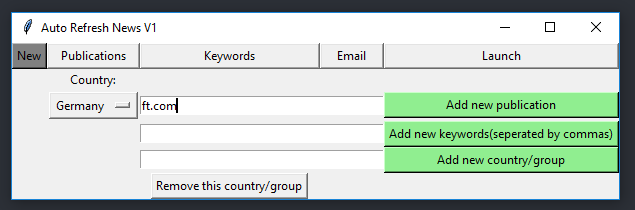

You need to locate the folder on your machine called,"Auto Refresh Tool V4". This is the program folder. The folder can be found through the search functionallity in file explorer. The folder is likley in the dowloads folder.
Launch the main file,found in the program folder, by opening the file called,"main". Select in the drop down menu the group you would like to add to. In order to add a new publication, put into the input field next to green button, "Add New Publication".Put the simple name of the website for example: "ft.com" for The Finantail Times or "theguardain.com" for the guardian. Then press the green button labeled,"Add New Publication". This will add the publiction to the selected group, e.g. Germany.
If you select the group,"All", the publications you add will be added to all groups
From the,"New" tab type keywords into the input field next to the green button labled,"Add New Keywords". Enter keywords seperated by commas. If keywords are too small, it will trigger the tool to detect an update too often. Keywords should be four letter words or more. The tool will only detect changes in the keywords in the webpage. All of the keywords entered will apply to all of the publications in that group. Keywords are not case sensitive. Submit the keywords by clicking the green button labeleed, "Add New Keywords".
If you select the group,"All", the keywords you add will be added to all groups

Navigate to the Email tab by clicking the button labeled,"Email", at the top of the window. Enter an email into the entry feild at the bottom of the window. Submit the email by pressing the green button labeled,"Add new email".
Navigate to the Laucnch tab by clicking the rightmost button at the top of the window. Then press the green button labled,"GO". A black window will then pop up. Only whilst this window is open will the tool be activated. The tool will only notify you of changes that occur whilst this window is open. You can stop the tool by closing the window.

When a publication website changes and there is a change in the keywords on the page, the tool will email all of the listed emails. The email will be from: autoemailmachine@gmail.com and the email will have,"Refresh Tool" in the subject.

In order to select a different group, click the pop menu underneath the label, "Group:. Then select the group that you would like to edit by clicking on the name.
To add a new group, go to the new tab and enter the name of the gorup in the field next to the button labled,"Add new country/group". The press the green button to submit the group. You can then select the new group in the dropdown menu and publications to it.
In order to delete a group, go to the "New" tab and select the group that you would like to delete. The button lableled, "remove this country/group" must then be pressed twice. After the first press of the button a warning will appear.